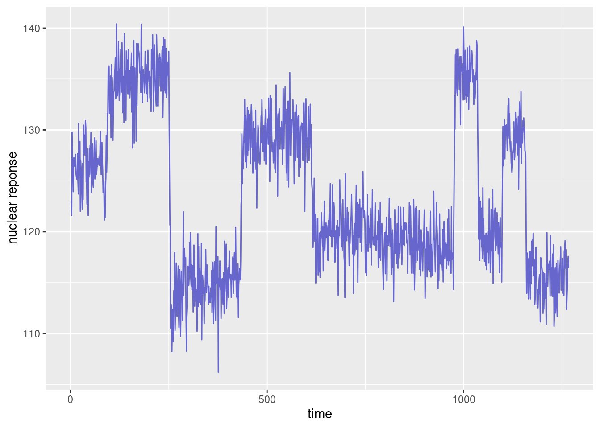
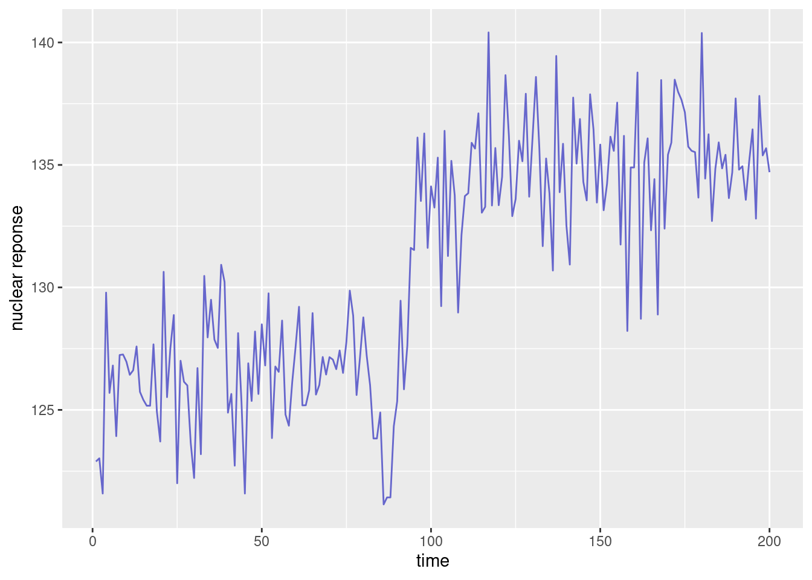
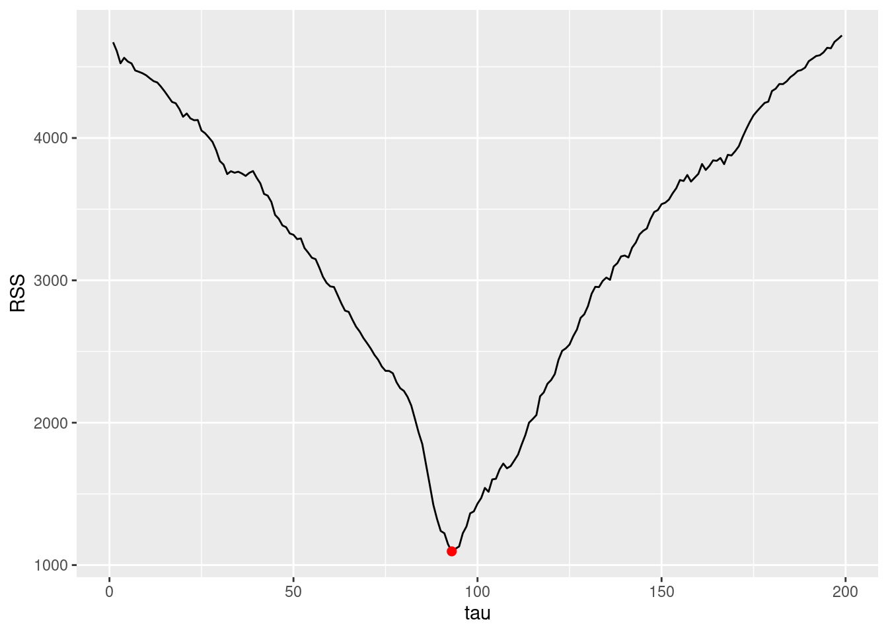
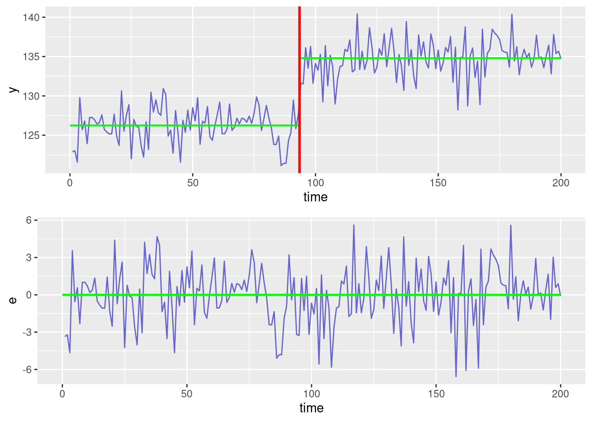
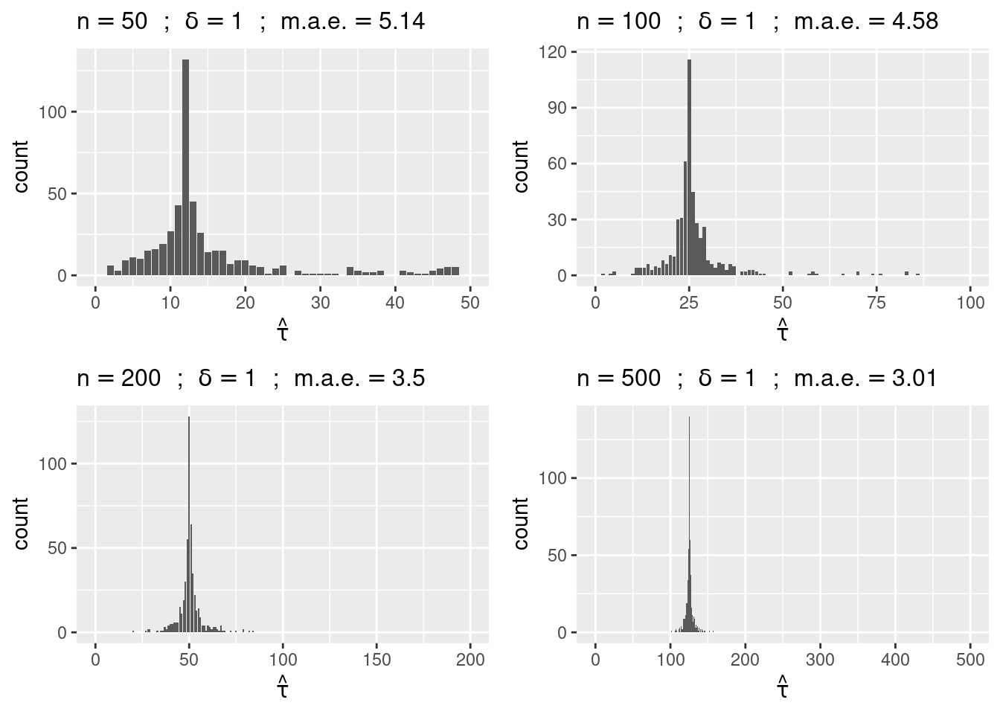
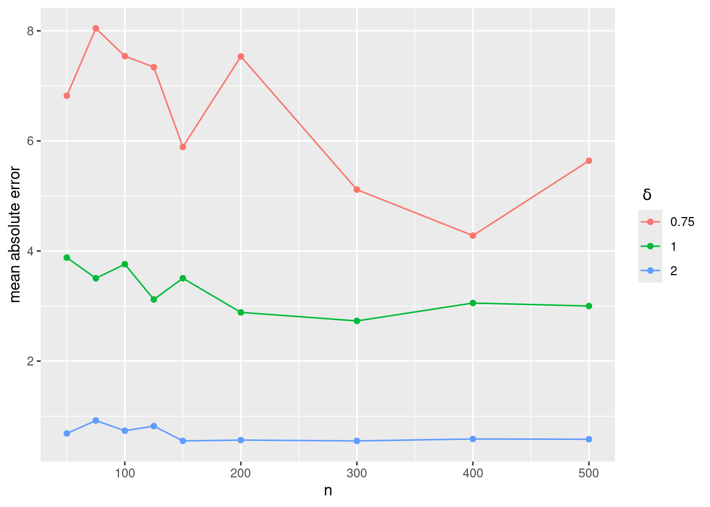

library(tidyverse)
library(gridExtra)
library(parallel)
theme_set(theme_bw())Detection of change points in a time series
Lecture Notes
Preliminary
Only functions from R-base and stats (preloaded) are required plus packages from the tidyverse for data representation and manipulation.
1 Introduction
An example of well-log data is shown in Fig. 1, and consists of measurements of the nuclear magnetic response of underground rocks.
d <- read_tsv(file="../../data/wellLogData.txt")
ggplot(d) + geom_line(aes(time, y), color="#6666CC") + ylab("nuclear reponse")
The x-axis represent either the time t at which the measurements were made, or the depth z=z(t) at which they were collected.
In drilling for oil, the problem of recovering the underlying signal of well-log data, such as that shown in the Figure above, is of practical importance.
Here, we will make the asumption that the underlying signal is piecewise constant, each constant segment relating to a stratum of a single type of rock. The jump discontinuities in the signal occur each time that a new rock stratum is met.
Hence, the problem consists in identifying
- the number of strata,
- the location of the discontinuities,
- the value of the underlying signal in each stratum.
In order to solve this problem, the observed phenomena and the geological model described above now need to be, respectively, represented and translated into a mathematical model.
2 A mathematical model
Our model assumes that the data fluctuates around some underlying signal f associated to the magnetic properties of the earth. Here, f(t) represents the ``true’’ nuclear reponse at time t (or at depth z(t)). Then, if t_1, t_2, \ldots, t_n are the n sampling time, we can decompose y_j as
y_j = f(t_j) + \varepsilon_j \quad ; \quad 1\leq j \leq n
where (\varepsilon_j) is a sequence of residual errors. These differences between predicted and observed values include measurement errors and modeling errors, due to the natural imperfections in mathematical models for representing complex physical phenomena.
Assuming that the magnetic properties of the rock do not change within each stratum means that f is piecewise constant. More precisely, we assume that there exist discontinuity instants \tau_1, \tau_2, \ldots \tau_{K-1} and nuclear response values \mu_1, \mu_2, \ldots,\mu_K such that
f(t) = \mu_k \quad \text{if } \ \tau_{k-1} < t \leq \tau_k where K is the number of strata, and where \tau_0=0 and \tau_K=n.
Thus, for any \tau_{k-1} < j \leq \tau_k,
y_j = \mu_k + \varepsilon_j
In a probabilistic framework, the sequence of residual errors (\varepsilon_j,1 \leq i \leq n) is a sequence of random variables with mean zero. Then, (y_j) is a sequence of random variables with piecewise constant mean:
\mathbb{E}(y_j) = \mu_k \quad {\rm if} \ \tau_{k-1} < j \leq \tau_k.
Within this framework, the problem of detecting discontinuities therefore reduces to the detection of abrupt changes in the mean of (y_j).
If we are thinking in some likelihood based approach for solving this problem, we need to go a little bit further in the definition of the probability distribution of the observed data. Let us asume, for instance, that (\varepsilon_j,1 \leq j \leq n) is a sequence of independent and identically distributed Gaussian variables:
\varepsilon_j \sim^{\text{iid}} {\cal N}(0,\sigma^2).
Then, (y_j) is also a sequence of independent Gaussian variables:
y_j \sim {\cal N}(\mu_k,\sigma^2) \quad {\rm if} \ \tau_{k-1} < j \leq \tau_k
We can now express our original problem in mathematical terms. Indeed, we aim to estimate
- the number K of segments,
- the sequence (\tau_k, 1 \leq k \leq {K-1}),
- the sequence (\mu_k, 1\leq k \leq K).
3 Maximum likelihood estimation
The model is parametric model which depends on a vector of parameters \theta = (\mu_1,\ldots, \mu_K,\sigma^2,\tau_1,\ldots,\tau_{K-1}).
We can then derive the likelihood function:
\begin{aligned} \ell(\theta;y_1,y_2,\ldots,y_n) &= \mathbb{P}(y_1,y_2,\ldots,y_n;\theta) \\ &= \prod_{k=1}^K \mathbb{P}(y_{\tau_{k-1}+1},\ldots ,y_{\tau_{k}};\mu_k,\sigma^2) \\ &= \prod_{k=1}^K (2\pi \sigma^2)^{\frac{-(\tau_k-\tau_{k-1})}{2}} {\rm exp}\left\{-\frac{1}{2\sigma^2}\sum_{j=\tau_{k-1}+1}^{\tau_k} (y_j-\mu_k)^2\right\} \\ &= (2\pi \sigma^2)^{\frac{-n}{2}} {\rm exp}\left\{-\frac{1}{2\sigma^2}\sum_{k=1}^K\sum_{j=\tau_{k-1}+1}^{\tau_k} (y_j-\mu_k)^2.\right\} \end{aligned}
We can classically decompose the maximum likelihood estimation of \theta into two steps:
- the means (\mu_k) and the change points (\tau_k) are estimated by minimizing J(\mu_1,\ldots, \mu_K,\tau_1,\ldots,\tau_{K-1}) = \sum_{k=1}^K\sum_{j=\tau_{k-1}+1}^{\tau_k} (y_j-\mu_k)^2
- the estimator of the variance \sigma^2 is the empirical variance of the estimated residuals: \hat{\sigma}^2 = \frac{1}{n} \sum_{k=1}^K\sum_{j=\hat{\tau}_{k-1}+1}^{\hat{\tau}_k} (y_j-\hat{\mu}_k)^2
The second step is straightforward. We will focus here on the first step, i.e. the minimization of J(\mu_1,\ldots, \mu_K,\tau_1,\ldots,\tau_{K-1}).
We can first remark that, for a given sequence of change points \tau_1, \ldots, \tau_{K-1}, J can easily be minimized with respect to \mu_1,\ldots, \mu_K. Indeed,
\begin{aligned} \hat{\mu}_k(\tau_{k-1},\tau_k) &= \overline{y}_{\tau_{k-1}+1:\tau_k} \\ &= \frac{1}{\tau_k-\tau_{k-1}}\sum_{j=\tau_{k-1}+1}^{\tau_k} y_j \end{aligned}
minimizes \sum_{j=\tau_{k-1}+1}^{\tau_k} (y_j-\mu_k)^2.
Plugging the estimated mean values (\hat{\mu}_k(\tau_{k-1},\tau_k)) into J leads to a new function U to minimize and which is now a function of \tau_1,\ldots,\tau_{K-1}:
\begin{aligned} U(\tau_1,\ldots,\tau_{K-1}) &= J(\hat{\mu}_1(\tau_0,\tau_1),\ldots, \hat{\mu}_K(\tau_{K-1},\tau_{K}),\tau_1,\ldots,\tau_{K-1}) \\ &= \sum_{k=1}^K\sum_{j=\tau_{k-1}+1}^{\tau_k} (y_j-\overline{y}_{\tau_{k-1}+1:\tau_k})^2 \end{aligned}
Remark
Because of the normality assumption, the maximum likelihood (ML) estimator of the change points coincides with the least-square (LS) estimator.
4 Detection of a single change point
4.1 The residual sum of squares
Before tackling the problem of detecting multiple change points in a time series, let us start with an easier one: the detection of a single change point.
Consider, for instance, our data until time 200:
n <- 200
d1 <- d[1:n,]
ggplot(data=d1) + geom_line(aes(time,y), color="#6666CC") + xlab("time") + ylab("nuclear reponse")
We clearly ``see’’ a jump in the mean before time 100. How can we automatically identify the time of such change?
Our model assumes that the data fluctuates around a signal which is piecewise constant: f(t) = \left\{ \begin{array}{ll} \mu_1 & \text{if } t\leq \tau \\ \mu_2 & \text{if } t> \tau \end{array} \right.
For estimating the parameters of the model, i.e \mu_1, \mu_2 and \tau, the least-square method minimizes the residual sum of squares (RSS)
U(\tau) = \sum_{j=1}^\tau (y_j - \overline{y}_{1:\tau})^2 + \sum_{j=\tau+1}^n (y_j - \overline{y}_{\tau+1:n})^2
Then, \begin{aligned} \hat{\tau} &= {\rm arg}\min_{1\leq \tau \leq n-1} U(\tau) \\ \hat{\mu}_1 &= \overline{y}_{1:\hat\tau} \\ \hat{\mu}_2 &= \overline{y}_{\hat\tau+1:n} \\ \hat{\sigma}^2 &= \frac{U(\hat\tau)}{n} \end{aligned}
Of course, the goal is to minimize U with respect to \tau. But looking at the sequence of residuals is also valuable for diagnostic purpose. Indeed, remember that the sequence of residuals (e_j) is supposed to randomly fluctuate around 0, without showing any kind of trend. Then, a fitted model which produces residuals that exhibit some clear trend should be rejected.
The residual sum of squares U displayed below is minimum for \hat{\tau} = 93
y <- d1$y
U <- data.frame(tau=(1:(n-1)),RSS=0)
for (tau in (1:(n-1))) {
m1 <- mean(y[1:tau])
m2 <- mean(y[(tau+1):n])
m <- c(rep(m1,tau),rep(m2,(n-tau)))
e <- y - m
U[tau,2] <- sum(e^2)
}
tau.est <- which.min(U$RSS)
U.min <- U[tau.est,2]
print(c(tau.est, U.min))[1] 93.000 1096.269ggplot(data=U) + geom_line(aes(tau,RSS)) + geom_point(aes(x=tau.est,y=U.min), colour="red", size=2)
Remark
The objective function to minimize is not convex. Then, any efficient method for convex optimization (for scalar function) may lead to some local minimum instead of the global one.
The optimal segmentation and the residuals obtained with \hat{\tau} = 93 are diplayed in the next Figure.
m1 <- mean(y[1:tau.est])
m2 <- mean(y[(tau.est+1):n])
m <- c(rep(m1,tau.est),rep(m2,(n-tau.est)))
d1$e <- y - m
dm <- data.frame(x1=c(0,tau.est+0.5), x2=c(tau.est+0.5,n), y1=c(m1,m2), y2=c(m1,m2))
pl1 <- ggplot(data=d1) + geom_line(aes(time, y), color="#6666CC") +
geom_segment(aes(x=x1, y=y1, xend=x2, yend=y2), colour="green", data=dm, size=0.75) +
geom_vline(xintercept = (tau.est+0.5), color="red", size=1)Warning: Using `size` aesthetic for lines was deprecated in ggplot2 3.4.0.
ℹ Please use `linewidth` instead.pl2 <- ggplot(data=d1) + geom_line(aes(time, e), color="#6666CC") +
geom_segment(aes(x=0,xend=n,y=0,yend=0), colour="green", data=dm, size=0.75)
grid.arrange(pl1, pl2)
The model we are challenging with our data assumes constant mean values before and after \tau=93. Residuals do not exhibit any clear trend. Thus, based on this diagnostic plot, there is no good reason for rejecting this model.
The assumptions made for the probability ditribution of the residual errors could also be tested:
- Neither the Shapiro-Wilk test nor the normal QQ plot suggest to reject the normality assumption:
qqnorm(d1$e)
shapiro.test(d1$e)
Shapiro-Wilk normality test
data: d1$e
W = 0.98776, p-value = 0.08299- The sequence of autocorrelations does not suggest to reject the hypothesis of uncorrelated residual errors:
acf(d1$e, ylab = "autocorrelation", main=" ")These results mean that assuming that the residuals are i.i.d. is acceptable. Then, we can be quite confident that the Least-Square criterion used for estimating the change-points has very good (not to say optimal) statistical properties.
5 Some statistical properties of \hat{\tau}
Until now, the main conclusion of this study is that a model with constant mean values before and after \tau=93 cannot be rejected.
Nevertheless, we would come to the same conclusion with \tau=92 or \tau=94but probably not with \tau=90 or \tau=110.
Indeed, even if \hat{\tau}=93 is the ML estimate of \tau, there remains some degree of uncertainty about the location of the change point since \hat{\tau} is a random variable.
What can we say about the ML estimator \hat{\tau} and the estimation error \hat{\tau} - \tau^\star, where \tau^\star is the “true” change point?
The theoretical properties of \hat{\tau} are not easy to derive (this is beyond the scope of this course). On the other hand, Monte Carlo simulation enables us to easily investigate these properties.
Then, the change-point is estimated for each of these simulated series and the sequence of estimates (\hat\tau_1, \hat\tau_2, \ldots , \hat\tau_M) is used:
- for estimating the probability distribution of \hat\tau by the empirical distribution of (\hat\tau_m, 1 \leq m \leq M)
- for estimating the expected absolute error \esp{|\hat\tau - \tau^\star|} by the mean absolute error \frac{1}{M}\sum_{m=1}^M |\hat\tau_m - \tau^\star|
Remarks
For a given n, the properties of \hat{\tau} only depends on (\mu_2-\mu_1)/\sigma. We therefore arbitrarly fix \mu_1=0 and \sigma^2=1.
As with any Monte Carlo study, increasing the Monte Carlo size M improve the accuracy of the results, i.e. the empirical distribution of (\hat\tau_m, 1 \leq m \leq M) looks more and more like the unknown probability distribution of \hat\tau, but the computational effort is also increased.
Note that, for a given number n of data points and a given change point \tau^\star, the estimation error decreases with the absolute difference of the two means \delta = |\mu_2-\mu_1|.
Let us display the ditribution of \hat{\tau} estimated by Monde Carlo simulation with the R function cpf, with n=100 and \delta=0.5, 0.75, 1, 2.
M <- 500
Q <- list()
for (delta in c(0.5, 0.75, 1, 2))
Q[[length(Q) + 1]] <- cpf(tau.star=25, delta, n=100, M, plot=TRUE)
do.call(grid.arrange, c(Q, nrow = 2))
- for a given jump \delta, the magnitude of the absolute estimation error |\hat{\tau} - \tau^\star| does not seem to change with n. On the other hand, the relative error |\hat{\tau} - \tau^\star|/n clearly decrease with n.
delta <- 1
Q <- list()
for (n in c(50, 100, 200, 500))
Q[[length(Q) + 1]] <- cpf(round(n/4), delta, n, M, plot=TRUE)
do.call(grid.arrange, c(Q, nrow = 2))Let us display the mean absolute error obtained with different value of n and \delta:
M <- 200
vd <- c(0.75, 1, 2)
vn <- c(50,75,100,125,150, seq(200,500,by=100))
E <- NULL
for (j in (1:length(vd)))
{
delta <- vd[j]
Ej <- data.frame(delta=delta, n=vn, mae=NA)
for (k in (1:length(vn))) {
n <- vn[k]
e <- cpf(tau.star=n/2, delta, n, M, plot=FALSE)
Ej$mae[k] <- mean(abs(e))
}
E <- rbind(E, Ej)
}
ggplot(data=E, aes(n,mae, colour=factor(delta))) + geom_line() + geom_point() + ylab("mean absolute error") + scale_colour_discrete(name=expression(paste(" ",delta)))
This plot shows that the expected absolute error \esp{|\hat\tau-\tau^\star|} does not depends on n but decreases with \delta.
The main theoretical result concerning \hat{\tau} for our Gaussian model (assuming i.i.d. residual) states that |\hat{\tau} - \tau^\star| = {\cal O}_{\rm P}(\frac{1}{\delta^2}), which means that \prob{\delta^2|\hat{\tau} - \tau^\star| > A} tends to 0 as A goes to infinity. In other words, when \delta increases, the expected absolute error decreases, in theory, as 1/\delta^2.
We can easily check by simulation that the empirical absolute error (displayed above) multiplied by \delta^2 is a random variable which does not exhibit any dependence with respect to n and \delta.
ggplot(data=E, aes(n,mae*delta^2, colour=factor(delta))) + geom_line() + geom_point() +
theme(legend.position=c(.8, .8)) + scale_colour_discrete(name=expression(paste(" ",delta)))
5.1 Testing the presence of a change-point
Until now, we only considered the problem of estimating a change point, assuming that there exits a change in the mean of the series (y_j,1\leq j \leq n). But what happens if there is no jump in the underlying signal?
We therefore need some criteria to decide if the change that has been detected is statistically significant or not. We can formulate our problem in terms of two hypotheses:
- {\cal H}_0 : there is no change and the mean remains constant
- {\cal H}_1 : the mean changes abruptly at some (unknown) instant \tau^\star
Before considering the general problem of testing {\cal H}_0 against {\cal H}_1, consider, for any 1\leq \tau \leq n-1, the simple alternative hypothesis
- {\cal H}_\tau: the mean changes at time \tau.
Under {\cal H}_\tau, the model is
- {\cal M}_\tau : y_j=\mu_1+\varepsilon_j for 1 \leq j \leq \tau and y_j=\mu_2+\varepsilon_j for \tau+1 \leq j \leq n where \varepsilon_j \sim^{\text{iid}} {\cal N}(0,\sigma^2).
The problem of testing if the mean changes at a given time \tau thus reduces to testing if the means \mu_1 and \mu_2 (before and after \tau) are equal.
Let us test, for instance, if the means before and after t=50 are equal:
n <- 200
tau <- 50
t.test(y[1:tau],y[(tau+1):n],var.equal = T)
Two Sample t-test
data: y[1:tau] and y[(tau + 1):n]
t = -9.1881, df = 198, p-value < 2.2e-16
alternative hypothesis: true difference in means is not equal to 0
95 percent confidence interval:
-7.462614 -4.825304
sample estimates:
mean of x mean of y
126.2105 132.3544 The test is clearly significant: we can conclude that the means before and after t=50 are different. Nevertheless, this result does not allows us to conclude that the mean jumps at time t=50. Indeed, we would also reject the null hypothesis for other possible values of \tau, including 150 for instance:
t.test(y[1:150],y[(151):n],var.equal = T)
Two Sample t-test
data: y[1:150] and y[(151):n]
t = -8.1992, df = 198, p-value = 2.997e-14
alternative hypothesis: true difference in means is not equal to 0
95 percent confidence interval:
-7.018332 -4.296874
sample estimates:
mean of x mean of y
129.4041 135.0617 Let us compute the test statistics S_\tau and the associated p-value p_\tau for all possible values of \tau:
t.stat <- t.pval <- NULL
for (tau in (1:(n-1))) {
test.tau <- t.test(y[1:tau],y[(tau+1):n],var.equal = T)
t.stat <- c(t.stat , abs(test.tau$statistic))
t.pval <- c(t.pval , test.tau$p.value)
}
tau.max <- which.max(t.stat)
S.max <- t.stat[tau.max]
p.min <- t.pval[tau.max]
print(c(tau.max, S.max, p.min)) t t
9.300000e+01 2.563787e+01 7.937425e-65 pl1 <- ggplot(data.frame(tau=1:(n-1), t.stat)) + geom_line(aes(tau,t.stat)) +
geom_point(aes(x=tau.max,y=S.max), colour="red", size=2)
pl2 <- ggplot(data.frame(tau=1:(n-1), t.pval)) + geom_line(aes(tau,t.pval)) +
geom_point(aes(x=tau.max,y=p.min), colour="red", size=2) +
scale_y_continuous(trans='log10')
grid.arrange(pl1, pl2, nrow=2)
We can remark that the sequence of t-statistics (S_\tau,1\leq \tau\leq n-1) reaches its maximum value when the sequence of p-values (p_\tau,1\leq \tau\leq n-1) reaches its minimum value, i.e. when \tau=\hat\tau=93.
Let’s go back now to our original problem of testing if there is a change at some unknown instant \tau^\star. The decision rule now depends on S_{\rm max}=\max(S_\tau,1\leq \tau\leq n-1) (or equivalently on p_{\rm min}=\min(p_\tau,1\leq \tau\leq n-1).
Indeed, we will reject {\cal H}_0 if S_{\rm max} is larger than some given threshold. More precisley, in order to control the level of the test, we will reject the null if S_{\rm max} > q_{S_{\rm max},1-\alpha}, where q_{S_{\rm max},1-\alpha} is the quantile of order 1-\alpha of S_{\rm max}, i.e. such that \prob{S_{\rm max} > q_{S_{\rm max},1-\alpha}} = \alpha
S_{\rm max} is the maximum value of a collection of n-1 random variables having a t distribution under the null hypothesis. Furthermore, these n-1 random variables are dependent since they all are function of the same serie (y_j,1\leq j \leq n).
The distribution of S_{\rm max} is then quite complex… but it can be approximated by Monte Carlo simulation:
M <- 500
S.max <- NULL
for (m in (1:M)) {
y.sim <- rnorm(n)
t.stat <- NULL
for (tau in (1:(n-1))) {
test.tau <- t.test(y.sim[1:tau],y.sim[(tau+1):n],var.equal = T)
t.stat <- c(t.stat , abs(test.tau$statistic))
}
tau.max <- which.max(t.stat)
S.max <- c(S.max, t.stat[tau.max])
}
hist(S.max, breaks=20)Quantiles of the distribution of S_{\rm max} can then be estimated by the empirical quantiles of the simulated sequence (S_{\rm max,m} , 1 \leq m \leq M):
alpha <- c(0.05, 0.01)
quantile(S.max,1-alpha) 95% 99%
3.152412 3.619060 We can use these empirical quantiles for designing the test and decide, for instance, to conclude that there is a change if S_{\rm max}> 3.15 (significance level = 0.05).
Note that these quantiles are greater that the quantiles of a t-distribution:
qt(1-alpha/2, n-1)[1] 1.971957 2.6007606 Detection of multiple change points
6.1 A dynamic programming algorithm
We have seen that the maximum likelihood method and the least-square method both consist in minimizing the function U(\tau) defined as
U(\tau_1,\ldots,\tau_{K-1}) = \sum_{k=1}^K\sum_{j=\tau_{k-1}+1}^{\tau_k} (y_j-\overline{y}_{\tau_{k-1}+1:\tau_k})^2
The algorithm used for estimating a single change point consists in an exhaustive search of this minimum. Such brute-force search becomes unfeasible when the number of change points increases. Indeed, the number of configurations of change points to compare is of the order of \left(\begin{array}{c}n \\ K \end{array} \right)
A dynamic programming algorithm is extremly efficient for solving this optimization problem with a time complexity O(n^2) only.
Imagine we want to do a trip from 1 to n in K steps. Let \tau_1, \tau_2, , \tau_{K-1} be a given position of travel stops. Assume now that the kth step between stop \tau_{k-1} and stop \tau_k has a cost u(\tau_{k-1},\tau_k) that only depends on (y_{\tau_{k-1}+1}, \ldots , y_{\tau_k}). Then, the total cost of this trip is
U(\tau_1,\ldots,\tau_{K-1}) = \sum_{k=1}^K u(\tau_{k-1},\tau_k) In the particular case of changes in the mean, u(\tau_{k-1},\tau_k) = \sum_{j=\tau_{k-1}+1}^{\tau_k} (y_j-\overline{y}_{\tau_{k-1}+1:\tau_k})^2 The algorithm uses a recursive optimization scheme. Indeed, if we know how to go (i.e. where to stop) from any position j to n in k-1 steps, then, for any j^\prime<j, the optimal trip from j^\prime to n in k steps and that first stops at j is already known.
Let u^{(k-1)}(j,n) be the cost of the optimal travel from j to n in k-1 steps. Then,
u^{(k)}(j^\prime,n) = \min_{j^\prime< j < n}\left(u(j^\prime,j) + u^{(k-1)}(j,n)\right) and we now know how to go from j^\prime to n in k steps.
This algorithm is implemented in the R function dynProg.mean. For a given maximum number of segments K_{\rm max}, this function returns:
- for 2 \leq K \leq K_{\rm max} segments, the K-1 estimated change points (\hat\tau_{K,k}, 1 \leq k \leq K-1) defined as (\hat\tau_{K,1}, \ldots , \hat\tau_{K,K-1}) = \argmin{\tau_{1} < \ldots < \tau_{K-1}} U(\tau_{1}, \ldots , \tau_{K-1})
- the values of the objective function, i.e. the residual sum of squares, obtained with 2 \leq K \leq K_{\rm max}: U_K = U(\hat\tau_{K,1}, \ldots , \hat\tau_{K,K-1})
dynProg.mean <- function(y, Kmax, Lmin=1)
{
Nr <- Kmax - 1
n <- length(y)
V <- matrix(Inf, nrow = n, ncol = n)
for (j1 in (1:(n-Lmin+1))){
for (j2 in ((j1+Lmin-1):n)) {
yj <- y[j1:j2]
nj <- j2-j1+1
V[j1,j2] <- sum(yj^2) - (sum(yj)^2)/nj
}
}
U <- vector(length=Kmax)
U[1] <- V[1,n]
D <- V[,n]
Pos <- matrix(nrow = n, ncol = Nr)
Pos[n,] <- rep(n,Nr)
tau.mat <- matrix(nrow = Nr,ncol = Nr)
for (k in 1:Nr){
for (j in 1:(n-1)){
dist <- V[j,j:(n-1)] + D[(j+1):n]
D[j] <- min(dist)
Pos[j,1] <- which.min(dist) + j
if (k > 1) { Pos[j,2:k] <- Pos[Pos[j,1],1:(k-1)] }
}
U[k+1] <- D[1]
tau.mat[k,1:k] <- Pos[1,1:k]-1
}
out <- list(Test=tau.mat, obj=data.frame(K=(1:Kmax),U=U))
out
}6.2 Application to the well-log data
TODO
6.3 Selecting the number of change points
We see a significant improvement of the fit when we start adding change points. The sequence of residuals also looks more and more as a sequence of i.i.d. centered random variables. Nevertheless these improvements suddenly become less obvious after detecting the main 8 jumps that are clearly visible. Indeed, adding more change points only allows to detect very small changes in the empirical mean and reduces the residual sum of squares very slightly.
A method for selecting an “optimal” number of segments consists in looking at the objective function obtained with different number of segments.
Kmax <- 20 # maximum number of segments
Lmin <- 1 # minimum length of a segment
r <- dynProg.mean(d$y,Kmax,Lmin)
pl <- ggplot(data=r$obj) + geom_line(aes(K,U), size=1, colour="purple")+
geom_point(aes(K,U), size=2, colour="purple")
print(pl)
As expected, the sequence (U_K , 1\leq K\leq K_{\rm max}) decreases significantly between K=1 and K=9. Then, the decrease is much lower. The value of K at which the slope abruptly changes provides an estimate \hat{K} of the number of segments.
We then deduce the \hat{K}-1 change points (\hat\tau_{\hat{K},1}, \ldots , \hat\tau_{\hat{K},\hat{K}-1} )
Kopt <- 9
print(r$Test[(Kopt-1),1:(Kopt-1)])[1] 93 252 433 614 976 1036 1098 1158y <- d$y
n <- length(y)
Topt <- c(0,r$Test[(Kopt-1),1:(Kopt-1)],n)
Tr <- c(0,Topt[2:Kopt]+0.5,n)
dm <- data.frame()
for (k in (1:Kopt)) {
m <- mean(y[(Topt[k]+1):Topt[k+1]])
dm <- rbind(dm, c(Tr[k],Tr[k+1],m,m))
}
names(dm) <- c("x1","x2","y1","y2")
pl <- ggplot(data=d) + geom_line(aes(time, y), color="#6666CC") +
geom_vline(xintercept = Tr[2:Kopt], color="red", size=0.25) +
geom_segment(aes(x=x1, y=y1, xend=x2, yend=y2), colour="green", data=dm, size=0.75)
plot(pl)
Let’s have a look at the objective function between K=9 and K=20.
pl <- ggplot(data=r$obj[9:20,]) + geom_line(aes(K,U), size=1, colour="purple")+
geom_point(aes(K,U), size=2, colour="purple")
print(pl)We notice another change in the slope at K=12. The segmentation with K=12 segments is displayed below.
Kopt <- 12
print(r$Test[(Kopt-1),1:(Kopt-1)]) [1] 93 251 254 262 433 614 793 976 1036 1098 1158Topt <- c(0,r$Test[(Kopt-1),1:(Kopt-1)],n)
Tr <- c(0,Topt[2:Kopt]+0.5,n)
dm <- data.frame()
for (k in (1:Kopt)) {
m <- mean(y[(Topt[k]+1):Topt[k+1]])
dm <- rbind(dm, c(Tr[k],Tr[k+1],m,m))
}
names(dm) <- c("x1","x2","y1","y2")
pl <- ggplot(data=d) + geom_line(aes(time, y), color="#6666CC") +
geom_vline(xintercept = Tr[2:Kopt], color="red", size=0.25) +
geom_segment(aes(x=x1, y=y1, xend=x2, yend=y2), colour="green", data=dm, size=0.75)
plot(pl)
Remark
Statistical modelling of the observed data allows us to get the optimal segmentation for any number of strata K and propose some possible number of strata (K=9 and K=12 appear to be the favourite numbers of strata). However, it is important to keep in mind that only a geologist or a geophysicist may decide which change points are physically significant. It is not a statistical criteria that can decide, for instance, if the change point located at t=793 (obtained with K=12 segments) should be associated to a significant change of the magnetic properties of the stratum identified between t=614 and t=976.
The interested reader may look at the following references: Fearnhead and Rigaill (2019), Fearnhead and Rigaill (2019), Picard et al. (2004), Lavielle and Moulines (2000), Bai (1994)
References
Bai, Jushan. 1994. “Least Squares Estimation of a Shift in Linear Processes.” Journal of Time Series Analysis 15 (5): 453–72.
Fearnhead, Paul, and Guillem Rigaill. 2019. “Changepoint Detection in the Presence of Outliers.” Journal of the American Statistical Association 114 (525): 169–83.
Lavielle, Marc, and Eric Moulines. 2000. “Least-Squares Estimation of an Unknown Number of Shifts in a Time Series.” Journal of Time Series Analysis 21 (1): 33–59.
Picard, Franck, Stéphane Robin, Marc Lavielle, Christian Vaisse, Gilles Celeux, and Jean-Jacques Daudin. 2004. “A Statistical Approach for CGH Microarray Data Analysis.” PhD thesis, INRIA.